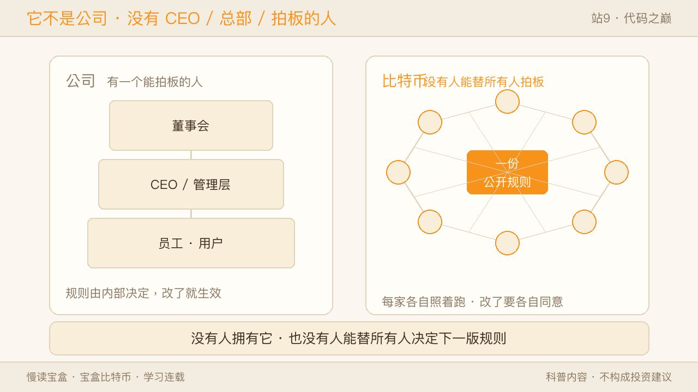
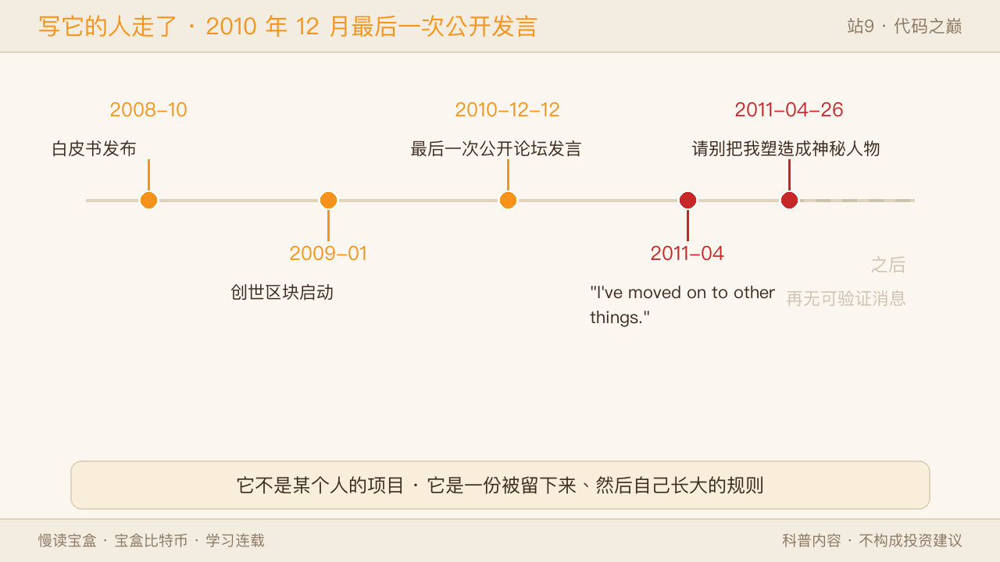
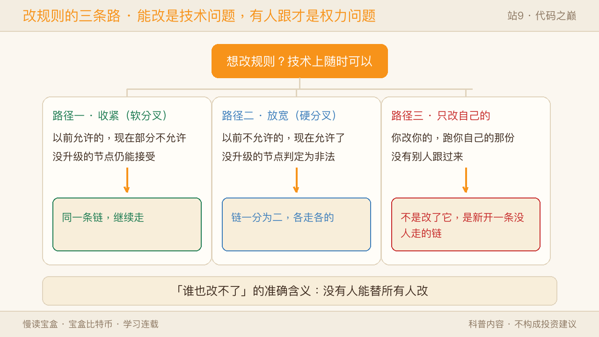
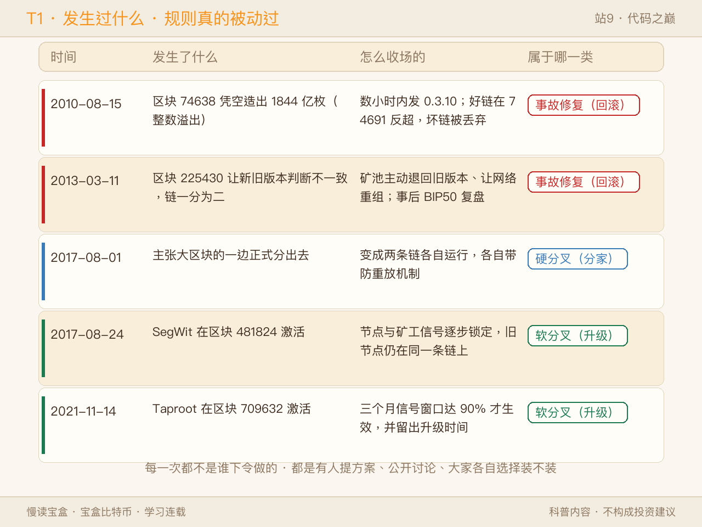
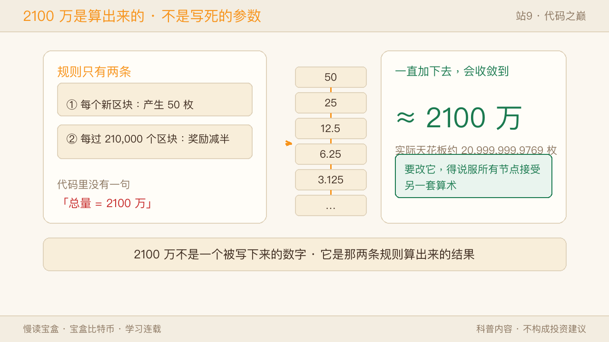
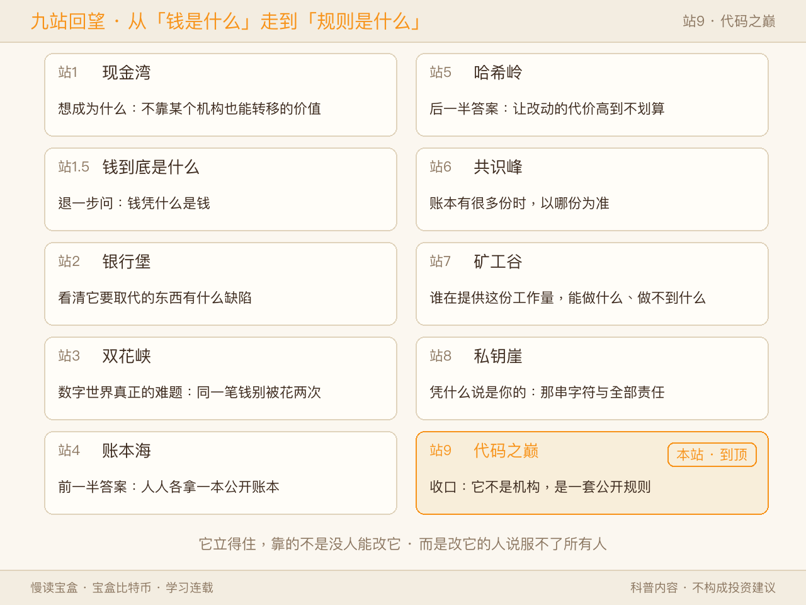
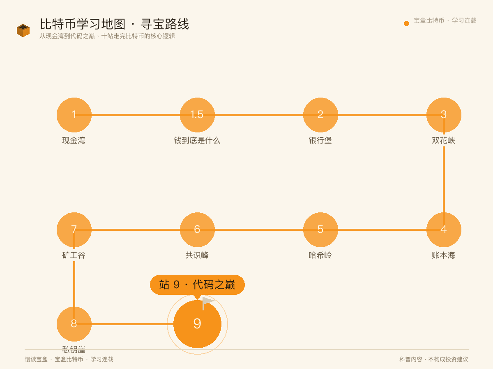

上一站我们爬上私钥崖，把那串字符摊开看清楚，也掂过了"没有客服"这四个字的重量。结尾留了一个更大的问题：
既然这套系统里没有管理者这个角色——那它到底是个什么东西？
它不是公司。没有 CEO，没有董事会，没有总部，也没有一个能拍板的人。更彻底的是：写它的人，在十五年前就走了。
于是问题就变得很实在：一套没有人负责的规则，凭什么还在跑？又凭什么没被谁改掉？
这一站我们登顶，把这最后一层拆开。先把话说在前面——"谁也改不了"这句话其实不严谨，本站会把它改成一个准确的说法。

一、先说清它"不是"什么
要回答"它是什么"，得先把三个常见的误解拿掉。
它没有 CEO。 没有任何一个人可以决定"下一版规则是什么"。有人提方案，但没有人有权批准。
它没有总部。 没有注册地址，没有办公室，没有法人，也没有一个可以发公告的官方账号。你在网上看到的那些"官方"，多半是某家公司、某个社区或某个媒体——它们都不拥有比特币。
它没有创始人在位。 这一点值得单独说。
中本聪最后一次在公开论坛发言，是 2010 年 12 月 12 日——内容很普通，是讲一个新版本里加了几处防攻击的限制。此后他只通过私人邮件和少数早期开发者保持联系。
2011 年 4 月 23 日，他在给开发者 Mike Hearn 的回信里写了一句话："I've moved on to other things."（我已经转向别的事情了。）
几天后，他给另一位开发者 Gavin Andresen 写信，请求对方不要把他塑造成一个神秘人物——因为他觉得这种叙事会把人们的注意力从项目本身引开。
从那以后，没有再出现可验证的、来自他的消息。
这三件事合在一起，指向同一个结论：比特币不是"某个人的项目"，它是一份被留下来、然后自己长大的规则。

✅ 像的地方：像一副象棋——规则是公开的，谁都能摆一盘，不需要向谁申请许可，也没人拥有象棋。 ⚠️ 不一样的地方：现实里的棋类规则有个机构在维护，改规则由它发通知；这里没有这个机构，也没有"发通知"这个动作。
二、那规则写在哪？
写在代码里，但代码不是重点，执行者才是。
比特币的规则是一份开源代码。任何人都可以把它下载下来，一字一句地读，也可以复制一份自己改。
真正让这套规则生效的不是那份代码文本，而是有多少人在照着它跑。
分散在世界各地、彼此不必互相认识的人，各自在自己的机器上运行这份代码。每收到一笔交易、一个区块，每个节点都独立地按同一套规则检查一遍：
- 这笔钱是不是真的存在、有没有被花过？
- 签名对不对？
- 新挖出的数量有没有超出该给的量？
- 这个区块的难度达不达标？
不合格就丢弃，不管是谁发来的。
关键在于：没有一个"总服务器"在宣布结果。 不是"某处算好了，再告诉大家答案"，而是一大批互不相识的机器各自算了一遍，然后碰巧算出同一个答案。
这就是为什么"改规则"这件事会变得棘手——下一节专门讲。
✅ 像的地方：像一份公开的菜谱——谁都能照着做，做出来的菜对不对，各家自己尝。 ⚠️ 不一样的地方：菜谱有"正不正宗"的争论，最后要靠名厨或机构认证；这里没有认证者，每个节点自己判断，判断的依据只有那份代码。
三、"谁也改不了"的真相
现在回到本站标题里那句话。
严格地说，代码是能改的，而且改起来很自由。 复制一份、改几行、自己跑起来——技术上没有任何阻碍。
真正的门槛不在"能不能改"，在后半句：改完之后，还有没有人认。
这就是为什么"不可篡改"这个流行说法需要修正。准确的说法是：
你随时可以改你手里的那份规则；但你没法强迫别人跟着你改。
于是改规则就只有三条路：
路径一：软分叉——把规则收紧。
新规则是旧规则的子集：以前允许的事，现在有一部分不允许了。没升级的旧节点看到新交易，虽然看不懂细节，但不会判定为错误，所以还能留在同一条链上。
这条路的好处是温和：不升级的人不会被甩下，只是少了一些新功能。
路径二：硬分叉——把规则放宽。
以前不允许的事，现在允许了。这时没升级的节点会认为新区块是非法的，直接拒绝。链就从那一刻分成两条：一边认，一边不认。
这条路的结果是"分家"：从此有两条链、两套账本、两种认同。
路径三：你自己改了，自己跑。
这是最容易被忽略、也最能说明问题的一条。你可以改出一份"总量 4200 万"的代码，完全合法，也没人拦你。
但改完之后，你在的那条链上只有你一个人。你不是在改比特币——你是新开了一条没人走的链。
所以"谁也改不了"的准确含义是：没有人能替所有人改。

✅ 像的地方：像你宣布"从今天起，我这盘棋的马可以走田字"——没人拦你，你确实可以这么下。 ⚠️ 不一样的地方：现实里的规则变更，只要权威机构发布了就会生效；这里没有"发布即生效"这个环节，生效的标志是别人愿不愿意继续跟你下同一盘棋。
四、它不是没被动过：三次真实危机
如果这套规则真的"谁也动不了"，那它就该是一条从未出过事故的直线。事实不是这样。
认真看它出过的几次事，比看一百句口号都有用。
2010 年 8 月 15 日：凭空出现的 1844 亿枚。
区块 74638 里出现了一笔交易，凭空造出了 184,467,440,737.09551616 枚比特币——两个地址各拿到约 922 亿枚，而规则说全世界上限只有 2100 万。
原因是代码里检查交易时，把两个巨大金额相加，超出了整数的表示范围，结果变成了一个能通过检查的怪值。
发现后几小时内，新版本 0.3.10 就发布了，规则改成直接拒绝这类溢出交易。随后"好链"在区块高度 74691 反超了那条坏链，坏链被丢弃——大约 53 个区块被回滚。
那 1844 亿枚，从此只存在于历史记录里。
2013 年 3 月 11 日：一次没计划过的分裂。
区块 225430 之后，网络一分为二：运行 0.8 版本的节点和老版本节点，对同一个区块给出了不同的判断。根子是新版换了数据库实现，而两版的容量限制不一样。
处理方式是几位矿池运营者主动把算力退回旧版本，让网络重新收敛到一条链上。事后这次事故被写成了一份公开复盘（BIP50）。
2017 年：一次真正的分家，和一次成功的升级。
那一年的分歧持续了两年多，焦点是"区块能装多少东西"。一派主张把区块直接放大，一派主张先改结构、把扩容放到链外去做。
结果分头走：
- 2017 年 8 月 1 日，主张大区块的一边分了出去，新链区块上限 8 MB，并加了防止两条链互相重放的机制。这就是那次著名的硬分叉。
- 2017 年 8 月 24 日，另一边的方案 SegWit 在区块 481824 激活。它是软分叉，没升级的节点仍能留在同一条链上。
- 原本计划接着做的"再放大到 2 MB"，因为没形成足够共识，在当年 11 月宣布取消。
四年后的 2021 年 11 月 14 日，又一次软分叉 Taproot 在区块 709632 激活。它的通过方式更谨慎：先给矿工三个月的信号窗口，达到 90% 才生效，并且留出几个月给大家升级。
| 时间 | 发生了什么 | 怎么收场的 | 属于哪一类 |
|---|---|---|---|
| 2010-08-15 | 区块 74638 凭空造出 1844 亿枚（整数溢出） | 数小时内发 0.3.10；好链在 74691 反超，坏链被丢弃 | 事故修复（回滚） |
| 2013-03-11 | 区块 225430 让新旧版本判断不一致，链一分为二 | 矿池主动退回旧版本、让网络重组；事后 BIP50 复盘 | 事故修复（回滚） |
| 2017-08-01 | 主张大区块的一边正式分出去 | 变成两条链各自运行，各自带防重放机制 | 硬分叉（分家） |
| 2017-08-24 | SegWit 在区块 481824 激活 | 节点与矿工信号逐步锁定，旧节点仍在同一条链上 | 软分叉（升级） |
| 2021-11-14 | Taproot 在区块 709632 激活 | 三个月信号窗口达 90% 才生效，并留出升级时间 | 软分叉（升级） |

看完这张表，有两件事必须说清楚，否则前面的章节会显得自相矛盾：
头一件：链是可以被回滚的。 2010 年和 2013 年都回滚过。所以"区块链不可篡改"里的"不可"，准确含义是"改它需要说服足够多的节点各自同意"，不是"物理上改不动"。早期节点少、事情紧急，说服的成本就低；今天再想这么干，成本已经高到另一回事了。
第二件：上面这些都不是某个人下令做的。 每一次，都是有人提出方案 → 公开讨论 → 有人选择装、有人选择不装 → 结果由"谁装了"决定。没有一次是靠命令完成的。
✅ 像的地方：像一次公共设施的抢修——修的时候得关阀，事后要复盘，过程全公开。 ⚠️ 不一样的地方：现实抢修由主管单位决定什么时候关、关多久；这里没有这个单位，关不关取决于每家自己装不装那个补丁。
五、2100 万：不是写死的参数，是算出来的
这一节是本站我最想讲的一段，因为它把"规则"这件事的本质露出来了。
很多人以为，代码里写着一句"总量 2100 万"。
其实没有。发行规则只有两条：
- 每个新区块，产生 50 枚新币作为奖励；
- 每过 210,000 个区块，这个奖励减半。
就这两条。于是奖励的序列是：
50 → 25 → 12.5 → 6.25 → 3.125 → ……
这是一个不断减半的等比数列。把它一直加下去，总和会收敛到一个上限——那个上限大约就是 2100 万。
也就是说：2100 万不是一个被写下来的数字，它是那两条规则算出来的结果。
（顺便说一句，受最小单位"聪"的整数运算限制，实际天花板是约 20,999,999.9769 枚，略少于 2100 万。）
这个区别不是文字游戏，它很要紧：
要改掉 2100 万这个上限，你得改的不是一行注释，也不是一句承诺，而是要说服所有节点接受另一套算术。只要还有相当多的人在跑那两条原始规则，你算出来的那个"新上限"就只在你那条链上成立。

✅ 像的地方：像圆周率 π——它不是谁规定的数字，是"圆"这个定义推出来的结果。 ⚠️ 不一样的地方：圆是天然存在的，π 改不了；比特币那两条规则是人写的，理论上可改——难的从来不是改，是让别人接受你改完的那套算术。
六、"谁也改不了"不等于"谁也不需要"
到这里，得给这套规则划一条边界，否则容易走火入魔。
链上规则管得了的事：一笔钱有没有被重复花、新币有没有超发、签名有没有效。
链上规则管不了的事，至少这几件：
- 它不知道你是谁。 地址背后是谁，链上不记录。确权、继承、纠纷，仍然要靠链外的法律和制度。
- 它管不到交易所和托管平台。 那些机构有自己的账本和规则。站 8 讲过：你在那里看到的余额，是对方对你的负债。
- 它不处理现实世界的争议。 被骗了、被勒索了、被盗了——链上不会为你回滚，能介入的是链外的执法与司法。
- 它不免除你的义务。 税务、申报、合规，按你所在地方的规则来，和链上规则是两套东西。
有一句流传很广的话叫"代码即法律"（Code is Law）。在链上的范围里，它接近成立：满足条件就执行，不讲情面，也不看身份。
但在链外，它不成立，而且从来没成立过。法律、法院、税务、社会信任，这些东西一点都没有被代码替代掉。
所以更准确的一句话是：比特币把"规则的执行"从人手里拿走了，但它没有把"人的社会"拿走。
✅ 像的地方：像交通规则——画好线、定好优先级，事故就少很多，大家不用互相猜。 ⚠️ 不一样的地方：交通规则背后有交警、有保险、有法院兜底；链上没有兜底这一层，出了事只能回到链外的现实世界去解决。
七、登顶回望：九站串成一句话
回到这张 10 站学习地图，我们从头走一遍：
站 1 现金湾——先看清比特币想成为什么：一种不依赖某个机构也能转移的价值。 站 1.5 钱到底是什么——往回退一步问：钱凭什么是钱？答案是它需要一个被广泛接受的锚。 站 2 银行堡——看清它要取代的东西有什么缺陷：远程不了、清算不了、也难以追责。 站 3 双花峡——数字世界真正的难题：一份文件可以复制，怎么保证同一笔钱没被花两次。 站 4 账本海——答案的前一半：让所有人各拿一本公开账本，改动会被看见。 站 5 哈希岭——答案的后一半：用一台造指纹的机器，让改动的代价高到不划算。 站 6 共识峰——账本有很多份时，以哪份为准：看哪条链背后积累的工作量更大。 站 7 矿工谷——谁在提供这份工作量，他们为什么愿意，又能做到什么、做不到什么。 站 8 私钥崖——最后剩下的问题是"凭什么说是你的"：答案是那串字符，以及随之而来的全部责任。 本站代码之巅——收口：这些全都不是某个机构在运营，而是一套公开规则；它稳固的原因不是没人能改，而是改了没人认。

所以，如果要用一句话收尾，我会这么说：
比特币不是一家公司，也不是一个组织。它是一份公开的、任何人都能拿来自己跑一遍的规则——它之所以稳固，不是因为没人能改它，而是因为改它的人说服不了所有人。

八、常见误解与边界
| 常见说法 | 实际情况 |
|---|---|
| 区块链不可篡改，所以记录永远改不了 | 链可以被回滚（2010、2013 都发生过）；准确说法是"改它需要说服足够多的节点各自同意" |
| 开发者想改就能改 | 改代码是自由的，让全网接受才是门槛；2017 年那个 2 MB 方案就因缺乏共识被取消 |
| 总量 2100 万是写死在代码里的 | 代码里只有"起始 50 枚 + 每 21 万个区块减半"两条规则，2100 万是它们算出来的上限 |
| 有了代码就不需要法律 | 链上规则只管链上；确权、继承、税收、纠纷仍然要靠链外的制度 |
📌 边界提示（三件常被忽略的事）：
- "没有管理者"不等于"没有维护者"。 写代码、审代码、提方案的人一直都在，而且一直在变。他们没有决定权，只有提议权。
- 升级是慢的，而且是故意慢的。 一次软分叉从提出到激活，往往要几个月到几年。这不是效率低，是因为"让所有人自愿跟上"本身就需要时间——快了就会有人被甩下。
- 本文只讲机制与历史，不评价任何一条链的好坏，不推荐任何软件或产品，也不构成任何操作建议。
三句话带走本篇：